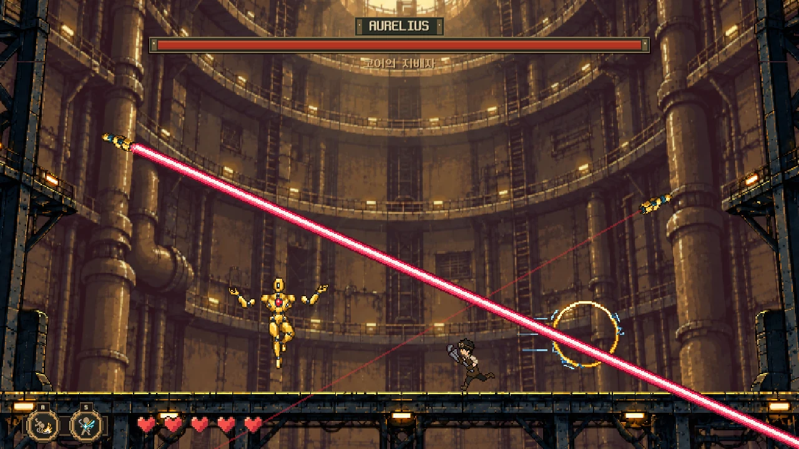

Unity 6 · C#
SteamHeart
쓰러진 할아버지의 기계 심장을 되살릴 코어를 찾아 도시의 하층에서 상층으로 올라가는 2D 사이드뷰 액션 어드벤처입니다.
- 담당
- 게임 프로그래밍 전체
UI 제작(AI 활용) · 레벨 구현·연출 적용 - 제작
- 4인 팀 · 기획 제외 약 3개월
최종 보스의 동시 공격과 중단 처리
여러 부위가 동시에 공격하더라도 각 공격을 독립적으로 중단할 수 있어야 했습니다. 손 네 개와 링을 별도로 관리해 서로 다른 부위가 동시에 공격할 수 있게 했습니다. 주요 패턴은 필요한 부위를 먼저 예약해 새 기본 공격을 막고, 진행 중인 기본 공격이 끝나 부위가 준비되면 시작합니다.
공격이 끝나거나 중단되면 해당 패턴의 피해 판정을 멈추고, 경고 표시와 공격 연출을 정리한 뒤 예약을 해제합니다. 다른 부위에서 진행 중인 공격은 그대로 이어집니다.
재현 테스트 · 영상 3.57초에서 한 손의 광선을 강제로 중단했습니다. 그 광선이 사라진 뒤에도 다른 손의 광선은 계속 발사됐습니다.
광선 중단 전후 비교


보스 1의 잔해를 활용한 연계 공격
양손 내려찍기로 생긴 잔해는 바닥에 닿으면 장애물로 남습니다. 이후 Overdrive 패턴에서 손으로 그 잔해를 쳐서 발사할 수 있도록 낙하·착지·발사 상태를 따로 관리했습니다.
잔해를 모두 소진하면 Overdrive가 끝난 뒤 양손 내려찍기를 우선 실행해 잔해를 다시 공급합니다.
사망 후에도 이어지는 성장
한 번의 도전에서만 쓰는 상태와 다음 도전에도 유지되는 진행도를 분리했습니다. 사망하면 처리장 입구에서 체력을 모두 회복하고 무기 단계가 초기화됩니다. 모은 고철과 제작대에서 적용한 영구 강화는 유지됩니다.
- 보유 고철
- 50 → 50
- 공격력 강화
- +1 → +1
- 무기 단계
- 1 → 0
재도전 테스트 영상 보기
그 외 구현
- 플레이어 전투
- 지상 2타 콤보의 입력 예약과 타격당 중복 피해 방지
- 레벨·연출
- 포털 이동과 컷신을 연결한 씬 전환
팀 결과물과 크레딧
팀 석복동(4인) · 8개 씬 · 보스 2종
- 최준이
- 게임 프로그래밍
- 전진범
- 총괄·기획, 아트, 사운드 디렉팅
- 임경섭
- 기획·사운드 디자인
- 최지환
- 스토리보드·편집